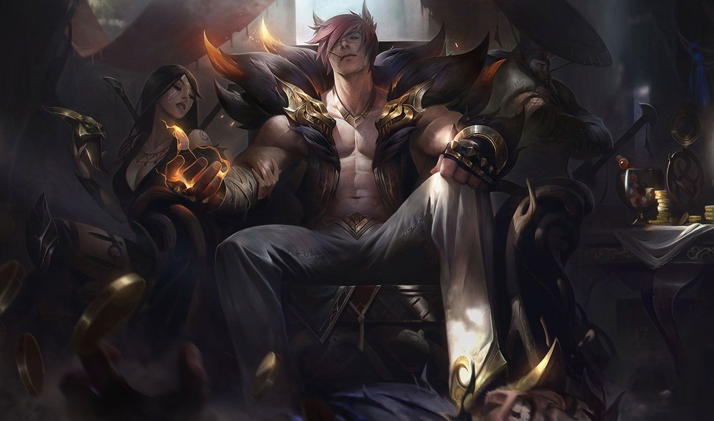

리그오브레전드 PES의 주 챔피언 소개
목차
우두머리-세트
1.배경
 ‘‘이왕 하는거... 우두머리가 되면 훨씬 좋잖아.’’
‘‘이왕 하는거... 우두머리가 되면 훨씬 좋잖아.’’
점점 세력을 더해 가는 아이오니아 범죄 세계의 우두머리 세트는 녹서스와의 전쟁이 끝남과 동시에 두각을 드러내기 시작했다. 나보리 투기장의 신인 투사로 등장한 그는 무지막지한 힘과 상상을 초월하는 맷집으로 금세 유명인사가 되었고, 결투를 계속하며 적수가 없게 되자 결국 스스로 투기장의 주인 자리에 올랐다. 여기는 장문의 배경이야기에 대해서 알아보기
2.능력치

무자원 챔피언이다. 기동력이 나쁜 점을 고려해서 그런지 기본 능력치가 수준급. 특히 체력 관련 능력치가 상당히 뛰어나다.
성장 공격 속도와 기본 공격력 수치가 낮긴 하지만 패시브를 감안하면 이도 평균 이상을 웃돈다.
그와 반대로 체력 재생은 너프를 한 번 당한 이후 많이 낮아졌지만 이는 패시브의 체력 재생으로 충분히 상쇄가 가능하다.
3.스킬
패시브 - 투기장의 투지(Pit Grit)

첫 번째 효과는 기본 공격 시, 평범한 공격인 왼손과 더 빠르고 강한 오른손을 번갈아 치는 패시브.
두 번째 효과는 체력 재생률을 높이는 효과.
Q - 주먹다짐(Knuckle Down)

사용하면 다음 기본 공격 2회가 강화되고, 잠시 동안 적 챔피언을 향해 다가갈 때 추가 이동 속도를 얻는다.
Q - 강펀치(Haymaker)

0.75초의 시전 시간 동안 기를 모은 다음, 사다리꼴 모양으로 주먹을 내질러 장풍을 날린다.
가운데 일직선 범위에 있는 적에게는 고정 피해를 주고, 그 바깥 범위에 있는 적에게는 물리 피해를 준다.
또한 투지가 있으면 그 투지를 전부 소모하여 보호막을 얻고, 장풍의 피해량도 증가한다. 캐스팅 시간이 있어 W-점멸이 가능하다.
E - 안면강타(Facebreaker)

자신의 양 옆에 있는 적 유닛들을 끌어와 둔화시킨다.
만일 좌우에 각각 하나 이상의 적 유닛이 끌려왔을 경우 적중한 적 모두를 둔화시키는 대신 기절시킨다.
R - 대미장식(The show stopper)

세트의 유일한 돌진기.
지정한 적에게 돌진해서 붙잡아 제압한 후, 앞으로 날아간 다음 바닥에 내려찍는다.
시전과 동시에 몸이 금빛으로 빛나며 적 챔피언과 함께 날아올라서 아래 한 바퀴로 돌리는 연출이 압권.
낙하 지점에 다다르면 대상 챔피언이 지면에 강렬하게 처박히며 주변 600 범위에 광역 물리 피해를 입힌다.
룬, 아이템

정복자를 주력으로 사용한다.일단 티아멧이나 해적검을 갔을 때를 기준으로 평타-평타-E-아이템-Q-평타-평타면 12스택 찬다.

세트는 안티탱커와 브루저 챔피언으로 블클과 몰왕을 올리고 탱템을 올리는 것을 추천한다.
아니면 극탱트리로 탱템만 가는것도 추천한다.
스킨
메카 삼국 세트(Mecha Kingdoms Sett)
밝은 하늘색 스킬 이펙트 효과에 메카로 모델링이 되어서 멋지다.